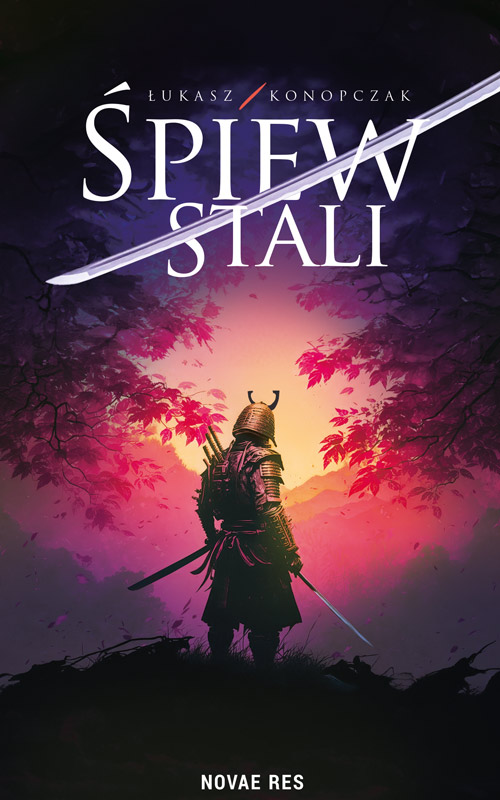

Autor "Śpiewu stali"
Epickiej opowieść o mitologii, honorze i zemście

Śmierć zwykle oznacza koniec. Dla nich okazała się początkiem.
Gdy wybranka Susanoo, boga piorunów, umiera, jego furia zmienia prastary porządek i powoduje, że świat kami oraz ludzi zmierza ku zagładzie. Bóg, wiedziony pragnieniem odzyskania utraconej miłości, schodzi w odmęty piekieł, by stawić czoła przerażającym próbom. Jego decyzje niosą ze sobą okrutne konsekwencje…
Tymczasem Kana Yamamoto, członkini zasłużonego japońskiego rodu, walczy o przetrwanie swojego klanu w obliczu inwazji Mongołów. Nie wie jeszcze, że już wkrótce najeźdźcy zza morza będą najmniejszym z jej kłopotów. Niebawem losy Kany nierozerwalnie splotą się z planami okrutnego następcy cesarskiego tronu. Jednak największy cios przyjdzie od strony przyjaciela…
„Śpiew Stali" zabiera Czytelnika w fascynującą i brutalną podróż do serca średniowiecznej Japonii, gdzie mitologia miesza się z rzeczywistością, a losy bogów oraz ludzi łączą w dramatyczną sagę. To epicka opowieść o honorze, spiskach, zemście i sile woli niezłomnej jak stal.
Książka dostępna w wersji papierowej i elektronicznej
w księgarniach internetowych
Obecnie pracuję nad kolejną książką - "Ostatni hymn" (tytuł roboczy).
Śledź moje social media, aby być na bieżąco!